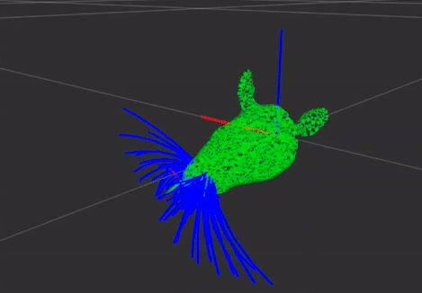
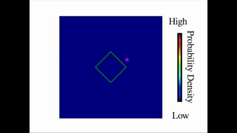
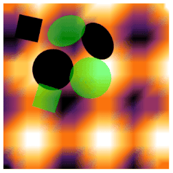

Bioinspired Sensing

Biology is used as inspiration towards the development of algorithms for robotic systems that exploit sensor dynamics for active sensing. In particular, rat vibrissae is studied as a focal point towards understanding how the sense of touch can be used more effectively in robotic systems.
Currently, I am implementing active sensing and exploration strategies that utilize the structure of the whisker array for shape estimation and localization of objects.
Object Shape Estimation
 Using the simplest form of tactile sensing, binary collisions, a low-resolution binary sensor can be used to autonomosly estimate the shape of objects when the robot control is directed via information-based ergodic policies.
Object Localization
 Once the shape of an object (or map) has been estimated, the original information encoded in the map from the binary sensors can be used as feature landmarks for information-based localization. This is particularly useful in scenarios where a robot only has tactile sensors and must locate objects that have been previously encountered and explored.
Publications
I. Abraham, A. Prabhakar, M. J. Z. Hartmann and T. D. Murphey, "Ergodic Exploration Using Binary Sensing for Nonparametric Shape Estimation," in IEEE Robotics and Automation Letters, vol. 2, no. 2, pp. 827-834, April 2017. doi: 10.1109/LRA.2017.2654542 I. Abraham "Active Tactile Sensing for Object Shape and Localization Using Ergodic Exploration," Master's Thesis, Northwestern University, 2017.
Email: i-abr@u.northwestern.edu, ianabraham21@gmail.com
Google Scholar : scholar